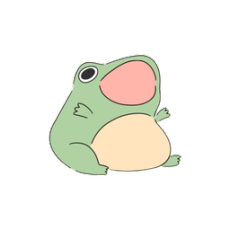
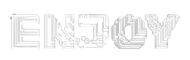
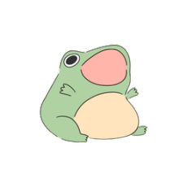
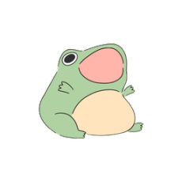
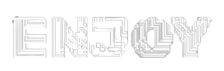
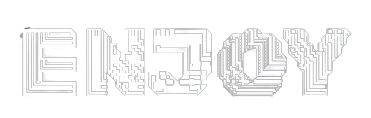

- app icons
- pack icons

- goat
- lib icons
- website icons
- EraCloud icons/images
- miscellaneous icons

- especial-themes
- TeamEra / helpers profile pictures


 



 

")


")
")
")
")
")
")
")


")